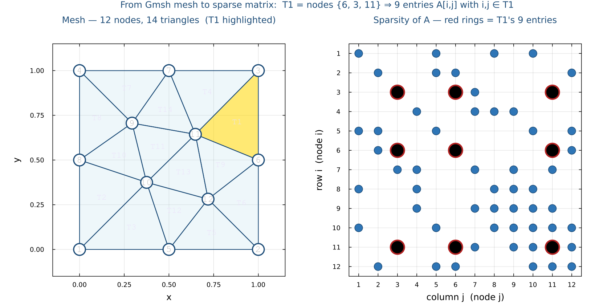
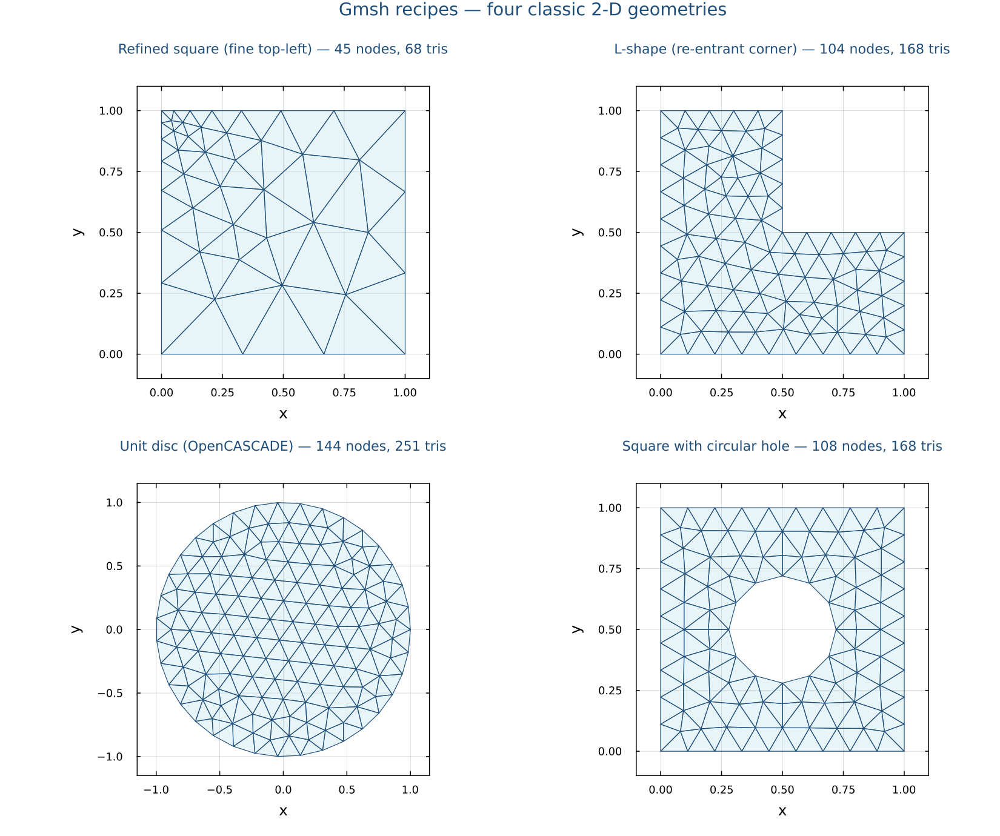

Mesh → Matrix with Gmsh
Going from a geometric description to a sparse linear system Au = b — the universal indexing pattern behind every FEM/FVM code.
← back to 7.4 Boundary conditions · continue to Step 8 — Package design patterns →
7.5 Beyond Structured Grids — Mesh → Matrix with Gmsh
Why structured grids are not enough
Everything we have done so far used a structured grid:
the unit interval $[0,1]$ chopped into $N$ equal sub-intervals, or
the unit square chopped into a uniform $N \times N$ array. Structured
grids have one huge advantage — neighbor relationships are trivial,
u[i+1, j] just is the right neighbor — and one fatal
disadvantage: they can only represent rectangular domains.
Real engineering geometry is never rectangular. An airfoil cross- section, an L-shaped duct, a brain in MRI data, a turbine blade — none of these fit a uniform grid without wasting most of the domain on points that are not in the body or, worse, putting grid points where there is no physics. The remedy is an unstructured mesh: a tessellation of the actual domain by triangles (in 2D) or tetrahedra (in 3D) that conforms to the geometry — denser near features that need resolution, coarser where the solution is boring.
What is "Gmsh"?
Gmsh
is the de-facto open-source mesh generator: a 30-year-old C++
project that takes a geometric description (points, lines, curves,
surfaces) and produces a high-quality unstructured mesh of the
enclosed region. It powers many academic FEM workflows and ships
with its own little CAD scripting language. We do not call its
executable from the shell — we use Gmsh.jl, the Julia
bindings, which expose the full Gmsh API as ordinary Julia
functions.
The three-part workflow
Going from "an L-shape on paper" to "a sparse matrix you can put in a linear solve" has three phases:
- Describe the geometry — write the
boundary as a sequence of points connected by lines/curves,
bound a surface with that boundary. Tell Gmsh how fine you want
the mesh near each point (the parameter
lcbelow). - Triangulate — let Gmsh fill the interior with well-shaped triangles that satisfy your size hints.
- Read it back into Julia — pull out the node coordinates and the connectivity table (which three nodes form each triangle), then assemble the sparse matrix using exactly the COO + element-loop pattern we already know.
julia --project=. generate_lecture_doc.jl
reproduces the same mesh and the same sparsity pattern on your machine.
Install Gmsh.jl
Gmsh.jl bundles the Gmsh binary inside the Julia package — no separate system install needed. One line in package mode and you are done:
(@julia-pde) pkg> add GmshGenerate a 2D triangular mesh of the unit square
We mesh the simplest possible domain — the unit square $[0,1]^2$ — so we can focus on the API and the index plumbing rather than the geometry. The function below opens Gmsh, registers four corner points, four edges, the surface they bound, runs the 2D mesher, then pulls the resulting nodes and triangles back as plain Julia arrays:
using Gmsh: gmsh
using SparseArrays
function gmsh_unit_square(; lc::Float64 = 0.5)
gmsh.initialize()
gmsh.option.setNumber("General.Terminal", 0)
gmsh.model.add("unit_square")
# 1. Geometry — corner points of [0,1]×[0,1], target size lc
p1 = gmsh.model.geo.addPoint(0.0, 0.0, 0.0, lc)
p2 = gmsh.model.geo.addPoint(1.0, 0.0, 0.0, lc)
p3 = gmsh.model.geo.addPoint(1.0, 1.0, 0.0, lc)
p4 = gmsh.model.geo.addPoint(0.0, 1.0, 0.0, lc)
# 2. Edges and the surface they bound
l1 = gmsh.model.geo.addLine(p1, p2)
l2 = gmsh.model.geo.addLine(p2, p3)
l3 = gmsh.model.geo.addLine(p3, p4)
l4 = gmsh.model.geo.addLine(p4, p1)
cl = gmsh.model.geo.addCurveLoop([l1, l2, l3, l4])
gmsh.model.geo.addPlaneSurface([cl])
# 3. Synchronise the CAD kernel and triangulate the surface
gmsh.model.geo.synchronize()
gmsh.model.mesh.generate(2) # 2D ⇒ triangles
# 4. Pull the mesh back into Julia
node_tags, coord, _ = gmsh.model.mesh.getNodes()
_, _, elem_node_tags = gmsh.model.mesh.getElements(2)
n_nodes = length(node_tags)
xy = reshape(coord, 3, n_nodes)[1:2, :] # drop z
# Gmsh tags can be sparse — remap to dense 1..n_nodes indices
tag2idx = Dict(Int(t) => i for (i,t) in enumerate(node_tags))
flat_conn = [tag2idx[Int(t)] for t in elem_node_tags[1]]
tri_nodes = reshape(flat_conn, 3, :)
gmsh.finalize()
return xy, tri_nodes
end
xy, tri_nodes = gmsh_unit_square(lc = 0.5)
# xy :: 2 × n_nodes (coordinates of every mesh node)
# tri_nodes :: 3 × n_tri (column k = global node IDs of triangle k)From mesh to sparse matrix — element assembly
What we are about to build, in plain words
We have a triangular mesh: a list of points (xy) and a list
of triangles (tri_nodes). We want to turn that geometry
into a matrix $A$ whose entries describe how the nodes
are connected. Why a matrix? Because every PDE solver, whether finite-
element, finite-volume, or finite-difference, ultimately produces a
linear system $A\mathbf{u} = \mathbf{b}$. The mesh tells us
which entries of $A$ are non-zero; the physics tells us
what values to put in them. In this section we focus only on
the first half — getting the right shape — by filling each entry with
1.0. Once that index plumbing works, swapping in real
physics values is trivial.
Three new ideas you need before reading the code
1. What is a sparse matrix?
A regular ("dense") matrix stores every entry, even the zeros. A 100 000 ×
100 000 dense matrix needs 80 GB of memory — impossible on a laptop.
In our triangle problem almost every entry of $A$ is zero (a node is
connected to maybe 6–8 neighbors out of thousands of mesh nodes), so
we use a sparse matrix: a data structure that only
stores the non-zero entries together with their $(i, j)$ positions. In
Julia, sparse matrices live in the SparseArrays standard
library — using SparseArrays at the top of the file.
2. What is the COO format?
"COO" stands for coordinate format — the simplest way to build a sparse matrix. You keep three parallel arrays:
I— the row of each non-zero entry,J— the column of each non-zero entry,V— the value at that(I[k], J[k])position.
So if I = [1, 3, 3], J = [2, 2, 5],
V = [4.0, 7.0, 9.0], then $A_{1,2}=4$, $A_{3,2}=7$,
$A_{3,5}=9$, and every other entry is zero. The Julia builder
sparse(I, J, V, m, n) turns those three arrays into an
$m \times n$ sparse matrix in one call.
3. What does "assembly" mean?
Assembly is the process of building the global matrix $A$ by visiting every element (triangle) one by one, computing a tiny local contribution for that element, and adding it into $A$ at the right global positions. Picture it as: each triangle hands in a 3 × 3 form saying "my three corners are global nodes 6, 3, and 11, and here are the nine numbers I want added at rows/columns 6, 3, 11". The assembler stamps those nine numbers into the big matrix and moves on to the next triangle. Two triangles that share a node both stamp into the same row/column — those contributions add up, which is exactly the physics of "this node feels both neighboring elements".
The code, line by line
Visit every triangle. For each ordered pair $(a, b)$ of its three local
nodes — that is all 9 combinations, including the diagonal $a = b$ —
record one COO triplet at the matching global indices. With
a unit value 1.0 we end up with the same non-zero pattern
that a real P1 finite-element stiffness matrix would have on this mesh:
function assemble_adjacency(tri_nodes, n_nodes)
I = Int[]; J = Int[]; V = Float64[] # three empty arrays we will grow
for k in axes(tri_nodes, 2) # for every triangle (column of tri_nodes)
nodes_k = tri_nodes[:, k] # the 3 GLOBAL node IDs of triangle k
for a in 1:3, b in 1:3 # all 9 (a,b) local pairs incl. a==b
push!(I, nodes_k[a]) # global row = global ID of local a
push!(J, nodes_k[b]) # global column = global ID of local b
push!(V, 1.0) # value (here just 1; in real FEM: K_ab)
end
end
return sparse(I, J, V, n_nodes, n_nodes) # build the sparse matrix; duplicates SUM
end
n_nodes = size(xy, 2) # number of mesh nodes
A = assemble_adjacency(tri_nodes, n_nodes) # the n × n sparse matrixReading the code from the inside out:
tri_nodes[:, k]grabs all rows of columnk: a length-3 vector of global node IDs for trianglek. For our mesh,tri_nodes[:, 1] == [6, 3, 11]— those are T1's three corners.- The
for a in 1:3, b in 1:3loop is Julia shorthand for a nested loop: 3 × 3 = 9 iterations per triangle. Each iteration picks one (local row, local column) pair $(a, b)$ inside the local 3×3 block. nodes_k[a]looks up the global ID of local cornera. So when(a, b) = (1, 2)on T1, we push row $= 6$, column $= 3$ — that is, "T1 contributes something to $A_{6,3}$".push!(V, 1.0)records the value to add. For a real Laplacian you would compute the 3×3 element stiffness matrix $K^{(k)}$ and pushK[a, b]instead — but the indices I and J never change. That is why this index plumbing is the only hard part of FEM/FVM assembly.sparse(I, J, V, n_nodes, n_nodes)hands the three arrays toSparseArrays, which builds the matrix and auto-sums every triplet that lands at the same $(i, j)$ position. No special code needed for shared nodes — Julia does it for you.
Why does sparse auto-summing matter so much?
Imagine node 11 is a corner of both T1 and T9. When we process T1 we
push something at $(11, 11)$. Later when we process T9 we push another
thing at $(11, 11)$. Without auto-summing we would have to either
(a) check whether that entry already exists and update it (slow,
complicated), or (b) collect every contribution and merge them at the
end (extra code). SparseArrays handles option (b)
transparently inside sparse(...), so our assembly loop
stays only a few lines. This is the same idea every FEM library uses
under the hood — Julia just exposes it directly.
Worked example for our 12-node mesh
Triangle T1 has corners [6, 3, 11]. The 9 triplets it
pushes are:
(I, J, V):
(6, 6, 1.0) (6, 3, 1.0) (6, 11, 1.0)
(3, 6, 1.0) (3, 3, 1.0) (3, 11, 1.0)
(11, 6, 1.0) (11, 3, 1.0) (11,11, 1.0)
Those are the 9 red rings on the right of the figure below. Triangle T9
shares nodes 11 and 6 with T1, so when T9 is processed it pushes
another (11, 11, 1.0) and another (6, 11, 1.0)
— and sparse sums them, giving $A_{11,11} \ge 2$ and
$A_{6,11} \ge 2$. That is "node 11 belongs to two triangles" written
in matrix language.
Why this non-zero pattern equals a real FEM stiffness matrix
In a P1 (linear) finite-element method, the basis function for node $i$ is non-zero only on the triangles that touch node $i$. The matrix entry $K_{ij} = \int_\Omega \nabla \phi_i \cdot \nabla \phi_j\,d\Omega$ is therefore non-zero iff nodes $i$ and $j$ both touch at least one common triangle — the exact condition we check here. So the sparsity pattern of our toy adjacency matrix is identical to the sparsity pattern of the real FEM matrix; only the numerical values differ. Once the indexing is right, plugging in the physics is a one-line change:
# Inside the loop, replace `push!(V, 1.0)` with:
K_local = element_stiffness(xy[:, nodes_k]) # 3×3 dense matrix from your physics
push!(V, K_local[a, b])sparse. The physics only changes which numbers go into
V — never I or J.
How mesh indices and matrix indices line up
This is the central idea behind FEM/FVM assembly — once it clicks, every other implementation detail follows:
- Each mesh node has a unique global index $1..n$. That same index is its row (and column) in $A$.
- Each element carries a small connectivity list. For a P1 triangle that list has three node IDs.
- The element produces a small dense local matrix $K^{(k)}_{ab}$ whose rows and columns are labelled by the element's local node order $(1, 2, 3)$.
- Local index $a$ maps to global index
tri_nodes[a, k]. So $K^{(k)}_{ab}$ is added into $A_{\text{tri\_nodes}[a,k],\,\text{tri\_nodes}[b,k]}$. - If two elements share a node, both contribute to the same row/column of $A$ — entry $A_{ij}$ is the sum of every element contribution touching the pair $(i,j)$. Mesh edges become off-diagonal non-zeros; mesh nodes become diagonal entries.

A; an entry
$A_{ij}$ is non-zero iff nodes $i$ and $j$ share at least one
triangle. The red rings on the right mark the nine entries
contributed by triangle T1 (gold on the left) —
i.e. all $(i, j)$ with $i, j \in \texttt{tri\_nodes[:, 1]}$.
How this figure was generated (Julia)
Calls gmsh_unit_square and
assemble_adjacency from the two earlier code
blocks, then plots the mesh and a custom spy of the resulting
sparse matrix side-by-side.
using Plots, Colors, SparseArrays
function fig_mesh_to_matrix()
xy, tri_nodes = gmsh_unit_square(lc=0.5)
n_nodes = size(xy, 2)
n_tri = size(tri_nodes, 2)
A = assemble_adjacency(tri_nodes, n_nodes)
tri_hl = tri_nodes[:, 1] # T1's three node IDs
BLUE = "#1F4E79"
# Left panel: the mesh with every node and triangle labelled
p1 = plot(legend=false, framestyle=:box, aspect_ratio=:equal,
xlim=(-0.15, 1.15), ylim=(-0.15, 1.15),
xlabel="x", ylabel="y",
title="Mesh — $n_nodes nodes, $n_tri triangles (T1 highlighted)",
titlefontsize=11, titlefontcolor=parse(Colorant, BLUE))
for k in 1:n_tri
a, b, c = tri_nodes[1, k], tri_nodes[2, k], tri_nodes[3, k]
xs = [xy[1, a], xy[1, b], xy[1, c], xy[1, a]]
ys = [xy[2, a], xy[2, b], xy[2, c], xy[2, a]]
fc = (k == 1) ? :gold : :lightblue
fa = (k == 1) ? 0.55 : 0.20
plot!(p1, xs, ys, seriestype=:shape,
fillcolor=fc, fillalpha=fa,
linecolor=parse(Colorant, BLUE), linewidth=1.4)
cx = (xy[1, a] + xy[1, b] + xy[1, c]) / 3
cy = (xy[2, a] + xy[2, b] + xy[2, c]) / 3
annotate!(p1, cx, cy, text("T$k", :gray30, :center, 8, :italic))
end
for i in 1:n_nodes
scatter!(p1, [xy[1, i]], [xy[2, i]], ms=12, color=:white,
markerstrokecolor=parse(Colorant, BLUE), markerstrokewidth=2)
annotate!(p1, xy[1, i], xy[2, i],
text("$i", parse(Colorant, BLUE), :center, 9, :bold))
end
# Right panel: spy plot of A with T1's 9 entries ringed
rows, cols, _ = findnz(A)
p2 = scatter(cols, rows, ms=8, color=:steelblue,
markerstrokecolor=parse(Colorant, BLUE),
markerstrokewidth=1, legend=false, framestyle=:box,
xlim=(0.5, n_nodes + 0.5), ylim=(0.5, n_nodes + 0.5),
yflip=true, aspect_ratio=:equal,
xticks=1:n_nodes, yticks=1:n_nodes,
xlabel="column j (node j)", ylabel="row i (node i)",
title="Sparsity of A — red rings = T1's 9 entries",
titlefontsize=11, titlefontcolor=parse(Colorant, BLUE))
for i in tri_hl, j in tri_hl
scatter!(p2, [j], [i], ms=14, color=:transparent,
markerstrokecolor=:firebrick, markerstrokewidth=2.5)
end
plt = plot(p1, p2, layout=(1, 2), size=(1300, 560), dpi=150,
left_margin=4Plots.mm, bottom_margin=4Plots.mm,
top_margin=8Plots.mm,
plot_title="From Gmsh mesh to sparse matrix: T1 = nodes {$(tri_hl[1]), $(tri_hl[2]), $(tri_hl[3])} ⇒ 9 entries A[i,j] with i,j ∈ T1",
plot_titlefontsize=11,
plot_titlefontcolor=parse(Colorant, BLUE))
savefig(plt, "mesh_to_matrix.png")
end
fig_mesh_to_matrix()Practical implications:
- Memory savings are huge. The sparsity of $A$ is roughly the average node degree of the mesh — in 2D triangulations every interior node typically has 6–8 neighbors, so $A$ stores about $7n$ non-zeros instead of the $n^2$ a dense representation would need. For a 1-million-node mesh that is ~7 MB of doubles instead of ~8 TB. This is why every realistic FEM/FVM code uses sparse storage end-to-end.
- Reordering nodes can speed up the solve. Sparse direct solvers are much faster when non-zero entries cluster near the diagonal (small "bandwidth"). Algorithms like Cuthill–McKee or graph partitioners like METIS relabel the nodes — that is, permute the rows and columns of $A$ — to push non-zeros towards the diagonal. They do not change the physics; they just renumber. With a good ordering you can solve problems an order of magnitude faster on the same hardware.
- Boundary conditions become row/column edits. Once the mesh-to-matrix mapping is in place, applying a Dirichlet BC ("$u = 0$ on this part of the boundary") just means editing the rows of $A$ whose indices match boundary nodes — set the row to a unit row and put the boundary value in $\mathbf{b}$. The same node-to-row mapping is reused; no extra bookkeeping needed.
- Higher-order elements reuse the same code.
With linear P1 triangles, each element has 3 degrees of
freedom (one per node). With P2 (quadratic) you gain extra DOFs
on edges; with P3 you gain DOFs on the interior of each triangle.
From the assembler's point of view, the only thing that changes
is the size of
tri_nodes(more rows) — the global-DOF-to-matrix-row rule is unchanged. This is the magic of element assembly: once it works for P1, you can swap in a P2 or P3 element matrix without touching the outer loop. - The same pattern works in 3D. A tetrahedral mesh has 4 nodes per element, so each element contributes a 4 × 4 = 16 entries to $A$ instead of 9. Otherwise the loop is line-for-line identical. That is why teaching this on the unit square pays off — you have already learned the 3D version.
\ or an iterative solver for the solve —
scales from a 12-node toy on the unit square to multi-million-DOF
production simulations on HPC clusters. Higher-level frameworks
like Ferrite.jl and Gridap.jl automate
the boilerplate (basis functions, quadrature, BC application) but
the conceptual model never changes.
Gmsh recipes — four classic 2-D geometries
The unit square is the simplest possible domain. Real problems use
anything from refined rectangles to L-shapes to discs to plates
with holes. Each of the four recipes below is a self-contained
Julia function that meshes one classic shape and returns the same
(xy, tri_nodes) arrays as gmsh_unit_square
— so the entire downstream sparse-matrix code keeps working with
no changes. The figure at the bottom is the actual output of
running these four functions.
Two Gmsh kernels appear below — Gmsh's built-in geometry kernel
(gmsh.model.geo) and the OpenCASCADE CAD kernel
(gmsh.model.occ). Use geo for polygons
defined by points and lines; reach for occ when you
need curved primitives (discs, splines) or boolean operations
(union, intersection, cut). After populating the model with either
kernel, call its synchronize() before
mesh.generate(2).
Recipe 1 — Square with local refinement
Same square, but ask Gmsh for a much finer element size at one corner. The mesher smoothly grades the size away from that corner. This is the cheap way to put resolution where it matters — near a singularity, a moving front, or a boundary layer:
function gmsh_square_refined()
gmsh.initialize()
gmsh.option.setNumber("General.Terminal", 0)
gmsh.model.add("square_refined")
# Per-point size hints: corners 1–3 are coarse, corner 4 is FINE
p1 = gmsh.model.geo.addPoint(0.0, 0.0, 0.0, 0.4)
p2 = gmsh.model.geo.addPoint(1.0, 0.0, 0.0, 0.4)
p3 = gmsh.model.geo.addPoint(1.0, 1.0, 0.0, 0.4)
p4 = gmsh.model.geo.addPoint(0.0, 1.0, 0.0, 0.05) # ← refined corner
l1 = gmsh.model.geo.addLine(p1, p2)
l2 = gmsh.model.geo.addLine(p2, p3)
l3 = gmsh.model.geo.addLine(p3, p4)
l4 = gmsh.model.geo.addLine(p4, p1)
cl = gmsh.model.geo.addCurveLoop([l1, l2, l3, l4])
gmsh.model.geo.addPlaneSurface([cl])
gmsh.model.geo.synchronize()
gmsh.model.mesh.generate(2)
# ... pull nodes/triangles back the same way as gmsh_unit_square
endRecipe 2 — L-shape (re-entrant corner)
The L-shape is the textbook hard case for elliptic PDEs: Poisson's equation on this domain has a singular gradient at the inner corner $(0.5,\,0.5)$, so naive uniform meshes converge slowly. Mesh refinement near that corner (or higher-order elements) is what gets the error back under control. We construct it by walking six points counter-clockwise:
function gmsh_lshape()
gmsh.initialize()
gmsh.option.setNumber("General.Terminal", 0)
gmsh.model.add("lshape")
coords = [(0.0, 0.0), (1.0, 0.0), (1.0, 0.5),
(0.5, 0.5), (0.5, 1.0), (0.0, 1.0)] # 6 vertices
pts = [gmsh.model.geo.addPoint(x, y, 0.0, 0.12) for (x, y) in coords]
lines = [gmsh.model.geo.addLine(pts[i], pts[mod1(i + 1, length(pts))])
for i in eachindex(pts)]
cl = gmsh.model.geo.addCurveLoop(lines)
gmsh.model.geo.addPlaneSurface([cl])
gmsh.model.geo.synchronize()
gmsh.model.mesh.generate(2)
# ... pull nodes/triangles back
endRecipe 3 — Unit disc (curved boundary)
A circle is impossible to describe exactly with straight lines, so
we switch to OpenCASCADE — Gmsh's CAD kernel. addDisk
takes the centre, then two radii (equal radii ⇒ a circle, unequal
⇒ an ellipse). We set a single global maximum size hint with
Mesh.CharacteristicLengthMax instead of decorating
every point:
function gmsh_disc()
gmsh.initialize()
gmsh.option.setNumber("General.Terminal", 0)
gmsh.model.add("disc")
# OpenCASCADE: addDisk(x, y, z, rx, ry) — rx==ry gives a circle
gmsh.model.occ.addDisk(0.0, 0.0, 0.0, 1.0, 1.0)
gmsh.model.occ.synchronize()
gmsh.option.setNumber("Mesh.CharacteristicLengthMax", 0.18)
gmsh.model.mesh.generate(2)
# ... pull nodes/triangles back
endRecipe 4 — Square with a circular hole (boolean cut)
A canonical CFD test geometry: a unit square with a circular hole
in the middle (steady Stokes / Navier–Stokes flow past a cylinder
lives on a long version of this). With OpenCASCADE you build the
two solids, then call cut — Gmsh handles the topology
and gives you back a single domain with a circular interior
boundary:
function gmsh_square_with_hole()
gmsh.initialize()
gmsh.option.setNumber("General.Terminal", 0)
gmsh.model.add("square_hole")
rect = gmsh.model.occ.addRectangle(0.0, 0.0, 0.0, 1.0, 1.0)
hole = gmsh.model.occ.addDisk(0.5, 0.5, 0.0, 0.22, 0.22)
# Boolean cut: rectangle MINUS disc → a square with a hole
# cut(objectDimTags, toolDimTags) — entities are (dim, tag) tuples
gmsh.model.occ.cut([(2, rect)], [(2, hole)])
gmsh.model.occ.synchronize()
gmsh.option.setNumber("Mesh.CharacteristicLengthMax", 0.12)
gmsh.model.mesh.generate(2)
# ... pull nodes/triangles back
end
How this figure was generated (Julia)
A single gmsh_geometry(symbol) dispatcher meshes any
of the four shapes; the plotting loop draws each mesh into one
of four panels.
using Plots, Colors, Gmsh
using Gmsh: gmsh
# Dispatcher — same return convention as gmsh_unit_square
function gmsh_geometry(geom_name::Symbol)
gmsh.initialize()
gmsh.option.setNumber("General.Terminal", 0)
gmsh.model.add(string(geom_name))
if geom_name == :square_refined
p1 = gmsh.model.geo.addPoint(0.0, 0.0, 0.0, 0.4)
p2 = gmsh.model.geo.addPoint(1.0, 0.0, 0.0, 0.4)
p3 = gmsh.model.geo.addPoint(1.0, 1.0, 0.0, 0.4)
p4 = gmsh.model.geo.addPoint(0.0, 1.0, 0.0, 0.05)
l1 = gmsh.model.geo.addLine(p1, p2)
l2 = gmsh.model.geo.addLine(p2, p3)
l3 = gmsh.model.geo.addLine(p3, p4)
l4 = gmsh.model.geo.addLine(p4, p1)
cl = gmsh.model.geo.addCurveLoop([l1, l2, l3, l4])
gmsh.model.geo.addPlaneSurface([cl])
gmsh.model.geo.synchronize()
elseif geom_name == :lshape
coords = [(0.0,0.0),(1.0,0.0),(1.0,0.5),(0.5,0.5),(0.5,1.0),(0.0,1.0)]
pts = [gmsh.model.geo.addPoint(x, y, 0.0, 0.12) for (x, y) in coords]
lines = [gmsh.model.geo.addLine(pts[i], pts[mod1(i + 1, length(pts))])
for i in eachindex(pts)]
cl = gmsh.model.geo.addCurveLoop(lines)
gmsh.model.geo.addPlaneSurface([cl])
gmsh.model.geo.synchronize()
elseif geom_name == :disc
gmsh.model.occ.addDisk(0.0, 0.0, 0.0, 1.0, 1.0)
gmsh.model.occ.synchronize()
gmsh.option.setNumber("Mesh.CharacteristicLengthMax", 0.18)
elseif geom_name == :square_hole
rect = gmsh.model.occ.addRectangle(0.0, 0.0, 0.0, 1.0, 1.0)
hole = gmsh.model.occ.addDisk(0.5, 0.5, 0.0, 0.22, 0.22)
gmsh.model.occ.cut([(2, rect)], [(2, hole)])
gmsh.model.occ.synchronize()
gmsh.option.setNumber("Mesh.CharacteristicLengthMax", 0.12)
end
gmsh.model.mesh.generate(2)
node_tags, coord, _ = gmsh.model.mesh.getNodes()
_, _, elem_node_tags = gmsh.model.mesh.getElements(2)
n_nodes = length(node_tags)
xy = reshape(coord, 3, n_nodes)[1:2, :]
tag2idx = Dict(Int(t) => i for (i, t) in enumerate(node_tags))
flat_conn = [tag2idx[Int(t)] for t in elem_node_tags[1]]
tri_nodes = reshape(flat_conn, 3, :)
gmsh.finalize()
return xy, tri_nodes
end
# Plot all four into a 2×2 figure
function fig_gmsh_gallery()
BLUE = "#1F4E79"
geoms = [:square_refined, :lshape, :disc, :square_hole]
titles = ["Refined square (fine top-left)", "L-shape (re-entrant corner)",
"Unit disc (OpenCASCADE)", "Square with circular hole"]
xlims = [(-0.10,1.10), (-0.10,1.10), (-1.15,1.15), (-0.10,1.10)]
ylims = [(-0.10,1.10), (-0.10,1.10), (-1.15,1.15), (-0.10,1.10)]
panels = []
for (i, g) in enumerate(geoms)
xy, tri_nodes = gmsh_geometry(g)
n_nodes = size(xy, 2); n_tri = size(tri_nodes, 2)
p = plot(legend=false, framestyle=:box, aspect_ratio=:equal,
xlim=xlims[i], ylim=ylims[i],
xlabel="x", ylabel="y",
title="$(titles[i]) — $n_nodes nodes, $n_tri tris",
titlefontsize=10, titlefontcolor=parse(Colorant, BLUE))
for k in 1:n_tri
a, b, c = tri_nodes[1, k], tri_nodes[2, k], tri_nodes[3, k]
xs = [xy[1, a], xy[1, b], xy[1, c], xy[1, a]]
ys = [xy[2, a], xy[2, b], xy[2, c], xy[2, a]]
plot!(p, xs, ys, seriestype=:shape,
fillcolor=:lightblue, fillalpha=0.30,
linecolor=parse(Colorant, BLUE), linewidth=0.8)
end
push!(panels, p)
end
plt = plot(panels..., layout=(2, 2), size=(1300, 920), dpi=150,
left_margin=4Plots.mm, bottom_margin=4Plots.mm,
top_margin=6Plots.mm,
plot_title="Gmsh recipes — four classic 2-D geometries",
plot_titlefontsize=13,
plot_titlefontcolor=parse(Colorant, BLUE))
savefig(plt, "gmsh_gallery.png")
end
fig_gmsh_gallery()How to extract nodes and triangles — same code for every recipe
Each of the four functions above ends with a call to
gmsh.model.mesh.generate(2). After that, the
"pull nodes/triangles back" step is identical to what we
saw earlier in gmsh_unit_square — Gmsh stores the
mesh in its own internal arrays and we copy them out into Julia
arrays with dense 1-based indices:
node_tags, coord, _ = gmsh.model.mesh.getNodes()
_, _, elem_node_tags = gmsh.model.mesh.getElements(2)
n_nodes = length(node_tags)
xy = reshape(coord, 3, n_nodes)[1:2, :] # drop z
tag2idx = Dict(Int(t) => i for (i, t) in enumerate(node_tags))
flat_conn = [tag2idx[Int(t)] for t in elem_node_tags[1]]
tri_nodes = reshape(flat_conn, 3, :)
gmsh.finalize()
return xy, tri_nodes
endThings to try after running these recipes
- Reuse the assembler. Pass any of the four
(xy, tri_nodes)outputs intoassemble_adjacency(tri_nodes, n_nodes)— the sparsity pattern of the resulting matrix is the connectivity of the new geometry. Plot it the same way as before. Notice how the bandwidth (how far off-diagonal the non-zeros sit) depends strongly on the geometry and on the order Gmsh assigned to the nodes. - Refine globally. Lower the
CharacteristicLengthMaxby a factor of 2 and watch the node count grow roughly 4× — the same factor as our $O(h^2)$ convergence theory. - Mix kernels. You can build a polygon with
geoand a curved hole withoccin the same model, then synchronise both — handy when the outer boundary is straight but the interior has curved features. - Save the mesh. Call
gmsh.write("mesh.msh")beforegmsh.finalize()to dump the mesh to disk in Gmsh's own format. Other Julia FEM packages (e.g.Ferrite.jl) read it directly.
← back to 7.4 Boundary conditions · continue to Step 8 — Package design patterns →